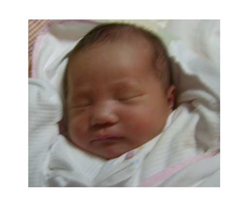
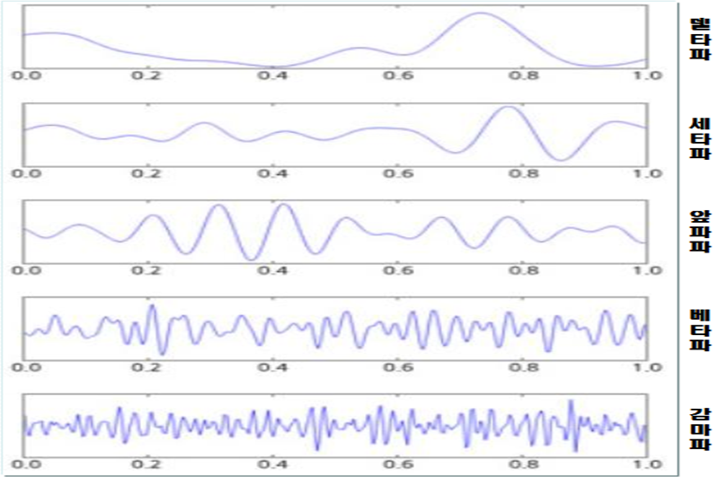

신생아의 환경은 정서적으로 평온하게 조성해야 한다. 이 시기의 영아는 하루 중 대부분의 시간 동안 잠을잔다. 불빛은 약간 어둡게 하고 소음은 없애며 엄마의 체온을 느낄 수 있도록 해준다. 점차 시간이 가면서 수면 시간과 수면 주기의 변화가 자주 나타난다.

신생아는 깨어있을 때도 조는 것처럼 얕은 수면 상태로 보내면서 성장한다. 울기 시작하면 20초 정도 기다려 깬 상태인지 졸고 있는 반수면 상태인지도 확인해야 한다. 신생아 때는 밤낮을 구별하지 못하므로 늘 주의깊게 살펴보면서 수면이 올바로 형성하도록 도와줘야 한다.
수면 발달 단계
-신생아는 하루에 70%(16~18시간)를 밤낮 구별 없이 ‘잠자기-깨어 있기-울기’를 반복한다.
-6개월이 되면 3~4회 정도 낮잠을 자다가 점차 수면 패턴이 형성되어 간다.
이 시기는 밤에는 자고 낮에는 깨어 있는 양상을 보인다.
-2세쯤 낮잠을 자는 횟수가 오전과 오후 1회씩 2회로 줄어들고 수면시간도 단축된다.
-3세가 되면 낮잠을 한 번 자거나 안 잘 수도 있다.
램수면과 비램수면
수면에는 눈동자가 움직이느냐 움직이지 않느냐에 따라 REM(Rapid Eye Movement, REM) 수면과 비REM(Non Rapid Eye Movement, REM) 수면으로 구분한다. 수면에 의한 뇌파는 델타파, 세타파, 알파파, 베타파, 감마파로 구분한다.

첫째, REM 수면은 소리를 내거나 꿈을 꾸는 듯이 빠른 눈동자의 움직임과 동시에 몸을 빈번하게 움직이며, 빠르고 불규칙한 호흡과 맥박이 나타난다.
둘째, 비REM 수면은 조용하고 깊은 잠으로 호흡이나 맥박이 규칙적이며 몸의 움직임도 거의 없는 것을 의미한다.
신생아는 50%가 REM 수면이다가 3개월이 되면서 40%로 줄어들고, 2세 경이 되면 전체 수면의 25~30%로 감소된다. 이러한 수면 시간의 감소는 출생 시 미성숙했던 뇌가 출생 후 첫 1~2년간 빠른 속도로 성장한 결과이다(Morelli, Rogoff, Oppenheim, & Goldsmith, 1992).
영아는 성장하면 뇌가 깨어 있는 시간이 많아진다. 자신의 주변의 환경에 의한 자극을 더 많이 받아들이면서 발달을 더욱 촉진시킨다. 이 때문에 낮과 밤의 주기가 일정하지 않게 된다. 상황에 따라 낮에 더 잘 자고 밤에 자지 않는 경우에는 수면 패턴에 혼란이 발생한다. 이 상태를 며칠 유지할 경우 수면문제와 정서적 문제가 동시에 증가하게 될 것이다.
수면문제를 해결하기 위한 효과적인 방법
1) 낮에 잠을 오래동안 깊이 잠들지 않도록 유도한다.
2) 저녁이 되면 잠자기 전에 미리 목욕을 가볍게 시킨다.
3) 주위를 어둡고, 조용하게 환경을 조성한다.
4) 그림책을 자연스럽게 읽어주거나 음악으로 긴장풀기를 한다.
5) 편안하게 잠들 수 있도록 스킨쉽(베이비맛사지)하는 방법도 있다.
6) 재울 때 질식사 방지를 위해 단단한 요나 매트리스에 재운다.
7) 등을 바닥에 대거나 옆으로 해서 편안한 자세, 바른 자세로 돌려주기도 한다.
수면 중 영아 돌연사 증후군 예방법
12개월 미만의 영아가 증상없이 갑자기 숨지는 것을 영아돌연사증후군(SIDS: Sudden Infant Death Syndrom)이라고 한다. 이러한 사망은 영아의 의료기록을 검토하고 충분히 조사를 했는데도 정확한 사인을 밝히지 못한 경우를 의미한다. 이 증후군은 6개월 이전에 발생하는 경우가 95%에 이르며, 여아보다 남아가 6대 4비율로 더 많고, 산모의 나이가 10대나 20대 초반 어릴수록 많이 나타낸다.
1) 영아를 푹신한 이불, 배개 위에 눕히지 않는다.
2) 영아의 몸을 옆으로 돌리거나 엎드린 자세로 재우지 않도록 한다.
3) 영아의 얼굴은 항상 천장을 향해 눕힌다.
4) 영아는 부모의 침실에 항상 가까이 놓고 민감하게 관찰한다.
2022.02.19 - [분류 전체보기] - 자아 개념 - 기질 및 성격 형성은 사회성 발달의 근원
자아 개념 - 기질 및 성격 형성은 사회성 발달의 근원
자아 개념 자아 개념(自我槪念)또는 자기 개념(Self-concept)은 소유(possession)로 사회적 태도, 능력, 느낌에 대한 주관적인 인식이다. 아이가 말을 하기 시작하면서 자신에 대해 말로 표현함으로써
think-sis.co.kr